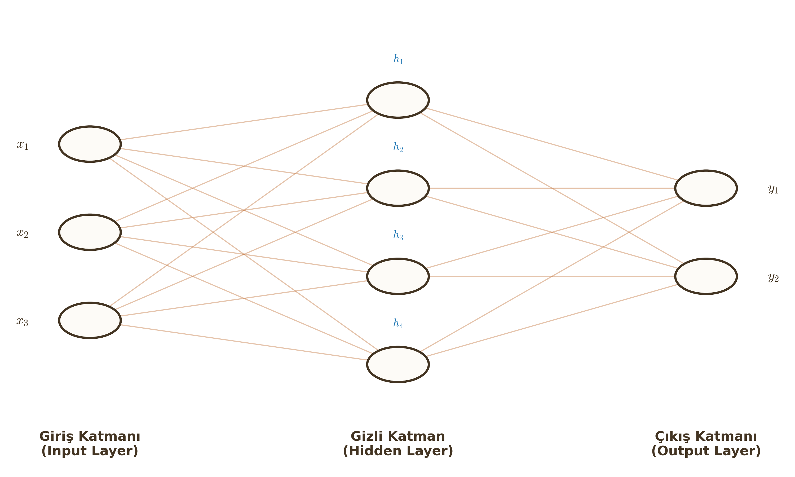

Yapay Sinir Ağları (Neural Networks)
Lojistik regresyon tek bir nörondu. Şimdi bu nöronları birbirine bağlayarak insan beynini taklit eden yapıları, yani Çok Katmanlı Algılayıcıları (MLP) inceleyeceğiz.
1. Multi-Layer Perceptron (MLP) Mimarisi
Bir yapay sinir ağı temel olarak üç tip katmandan oluşur:
- Giriş Katmanı (Input Layer): Verinin ağa girdiği yerdir. İşlem yapmaz, sadece veriyi iletir.
- Gizli Katmanlar (Hidden Layers): Giriş ve çıkış arasında kalan, dış dünyadan soyutlanmış katmanlardır. "Gizli" denmesinin sebebi, bu katmanların değerlerinin veri setinde doğrudan gözlemlenememesidir. Öznitelik çıkarma (Feature Extraction) burada yapılır.
- Çıkış Katmanı (Output Layer): Ağın tahminini ürettiği son katmandır.

Forward Propagation (İleri Yayılım)
Verinin girişten çıkışa doğru akışıdır. Her nöron iki işlem yapar: 1. Lineer Toplama: $z = \sum w_i x_i + b$ 2. Aktivasyon: $a = \sigma(z)$
Ağ boyunca akış: $x \to z^{[1]} \to a^{[1]} \to z^{[2]} \to a^{[2]} \dots \to \hat{y}$
Non-Linearity (Doğrusal Olmayanlık) ve XOR Problemi
Tek katmanlı bir ağ (Perceptron), sadece doğrusal olarak ayrılabilen problemleri (AND, OR kapıları gibi) çözebilir. Ancak XOR gibi doğrusal olmayan problemleri çözemez.
Kritik Sınav Bilgisi
Eğer gizli katmanlarda aktivasyon fonksiyonu (Sigmoid, ReLU vb.) kullanmazsanız, ağınız ne kadar derin olursa olsun, matematiksel olarak tek katmanlı lineer bir modele eşdeğerdir. Derin öğrenmenin gücü, aktivasyon fonksiyonlarının kattığı "Non-Lineerlikten" gelir.
Regresyon Uygulaması
Eğer amacımız sınıflandırma değil de bir sayı tahmin etmekse (Örn: Ev fiyatı), çıkış katmanındaki nöronun aktivasyon fonksiyonu: * Genellikle Linear (Hiçbir şey yapma) veya * Sadece pozitif değerler için ReLU seçilir.
2. Backpropagation (Geri Yayılım Algoritması)
Ağın tahminini ($\hat{y}$) bulduk (Forward pass). Ancak bu tahmin gerçek değerden ($y$) farklı. Hatayı azaltmak için ağırlıkları ($w$) nasıl güncelleyeceğiz?
Mantık: Çıkıştan girişe doğru giderek, "Hatanın ne kadarı hangi ağırlıktan kaynaklanıyor?" sorusunu cevaplarız. Bu bir Türev (Gradient) hesabıdır.
Zincir Kuralı (Chain Rule)
Kalkülüsün en önemli kuralıdır. $L$ (Loss) fonksiyonunun $w$ (Ağırlık) parametresine göre türevini parçalayarak bulmamızı sağlar.
$$\frac{\partial L}{\partial w} = \frac{\partial L}{\partial a} \cdot \frac{\partial a}{\partial z} \cdot \frac{\partial z}{\partial w}$$
Bu üç terimi analiz edelim: 1. $\frac{\partial L}{\partial a}$: Maliyetin aktivasyona göre değişimi (Hata ne kadar?). 2. $\frac{\partial a}{\partial z}$: Aktivasyon fonksiyonunun türevi (Örn: Sigmoid türevi). 3. $\frac{\partial z}{\partial w}$: Giriş değeri (Çünkü $z = wx+b$, türevi $x$'tir).
Öğrenci Notu
Backpropagation aslında "Zincir Kuralı"nın ağ üzerinde tekrar tekrar uygulanmasından başka bir şey değildir. Her katman hatayı bir öncekine devreder.
Öğrenme Modları (Gradient Descent Varyasyonları)
Ağırlık güncellemesi ne sıklıkla yapılacak?
| Mod | Açıklama | Avantaj/Dezavantaj |
|---|---|---|
| Batch | Tüm veri seti bittikten sonra 1 güncelleme yapılır. | Kararlı (Stable) ama yavaştır. Bellek sorunu yaratabilir. |
| Online (Stochastic) | Her bir örnekten sonra hemen güncelleme yapılır. | Hızlıdır ama gürültülüdür (Zikzak çizer). |
| Mini-Batch | Veri küçük paketlere (Örn: 32, 64) bölünür. Her pakette bir güncelleme. | Hem hızlı hem kararlıdır. Endüstri standardıdır. |
3. Çok Sınıflı Sınıflandırma (Multiclass)
Eğer çıktımız kedi/köpek (Binary) değil de Kedi/Köpek/Kuş/Araba gibi $K$ sınıftan oluşuyorsa ne yaparız?
Softmax Aktivasyon Fonksiyonu
Çıkış katmanındaki ham skorları ($z_i$), toplamı 1 olan bir olasılık dağılımına dönüştürür.
$$a_i = \frac{e^{z_i}}{\sum_{j=1}^{K} e^{z_j}}$$
Örnek: $z=[2.0, 1.0, 0.1] \xrightarrow{\text{Softmax}} p=[0.7, 0.2, 0.1]$
One-Hot Encoding
Hedef etiketleri ($y$) sayısal vektörlere çevrilir. Sadece doğru sınıfın indeksi 1, diğerleri 0 olur. * Kedi (Sınıf 0): $[1, 0, 0, 0]$ * Köpek (Sınıf 1): $[0, 1, 0, 0]$
4. Uygulama: Elle Hesaplama Örneği (Vize Sorusu Tipi)
Basit bir ağ düşünelim:
- Giriş: $x = 0.5$
- Hedef: $y = 1.0$
- Ağırlık (Giriş-Gizli): $w_1 = 0.5$
- Ağırlık (Gizli-Çıkış): $w_2 = 0.2$
- Aktivasyon: Sigmoid ($\sigma$)
- Maliyet Fonksiyonu: Basitlik için Kare Hata ($L = \frac{1}{2}(\hat{y}-y)^2$) kullanalım.
Adım 1: İleri Yayılım (Forward Pass)
-
Gizli Nöron: $z_1 = x \cdot w_1 = 0.5 \cdot 0.5 = 0.25$ $a_1 = \sigma(0.25) \approx 0.562$
-
Çıkış Nöronu: $z_2 = a_1 \cdot w_2 = 0.562 \cdot 0.2 = 0.112$ $a_2 = \sigma(0.112) \approx 0.528$ (Bu bizim tahminimiz $\hat{y}$)
Hata: $L = \frac{1}{2}(0.528 - 1.0)^2 = 0.111$
Adım 2: Geri Yayılım (Backpropagation) - $w_2$'yi güncelleyelim.
Zincir kuralı: $\frac{\partial L}{\partial w_2} = \frac{\partial L}{\partial a_2} \cdot \frac{\partial a_2}{\partial z_2} \cdot \frac{\partial z_2}{\partial w_2}$
- Hata terimi: $\frac{\partial L}{\partial a_2} = (a_2 - y) = (0.528 - 1.0) = -0.472$
- Sigmoid türevi: $\frac{\partial a_2}{\partial z_2} = a_2(1-a_2) = 0.528(1-0.528) \approx 0.249$
- Giriş: $\frac{\partial z_2}{\partial w_2} = a_1 = 0.562$
Gradyan: $\frac{\partial L}{\partial w_2} = (-0.472) \cdot (0.249) \cdot (0.562) \approx -0.066$
Güncelleme ($\alpha = 1$ varsayalım): $w_2^{yeni} = w_2 - \alpha \cdot \text{Gradyan} = 0.2 - (-0.066) = 0.266$ (Ağırlık arttı, çünkü hedef 1.0 iken biz 0.528 bulduk, yani artırmamız gerekiyordu).
ÖZET: Yapay Sinir Ağı Formülleri
| Kavram | Formül | Not |
|---|---|---|
| Lineer Katman | $z = w^T x + b$ | Matris çarpımı |
| Sigmoid | $\sigma(z) = \frac{1}{1+e^{-z}}$ | Çıktı $(0, 1)$ arası |
| Softmax | $a_i = \frac{e^{z_i}}{\sum e^{z_j}}$ | Çok sınıflı çıktı |
| Cross-Entropy Loss | $L = -\sum y_i \log(\hat{y}_i)$ | Sınıflandırma Hatası |
| Zincir Kuralı | $\frac{\partial L}{\partial w} = \delta \cdot x$ | $\delta$: Yerel Gradyan |
| SGD Güncelleme | $w \leftarrow w - \alpha \nabla w$ | $\alpha$: Learning Rate |